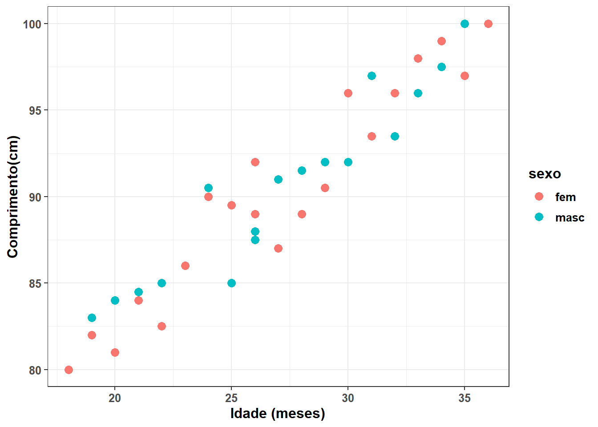
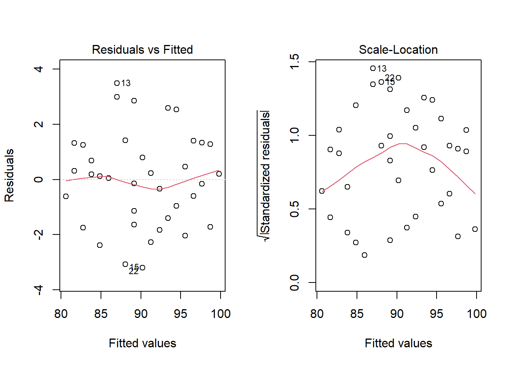
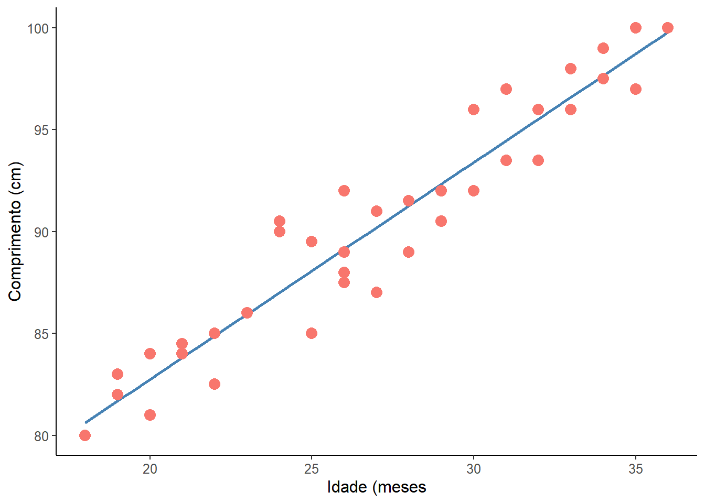
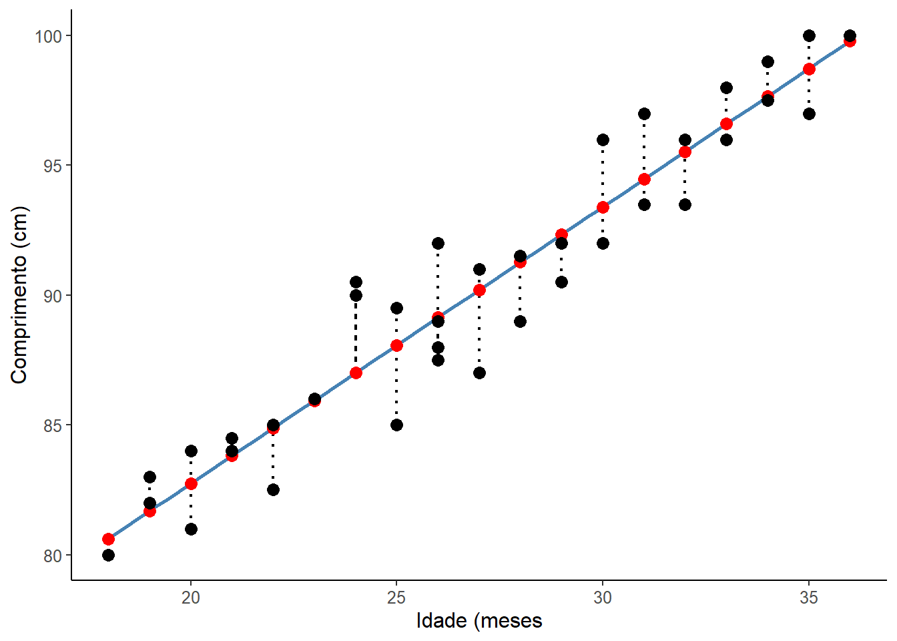
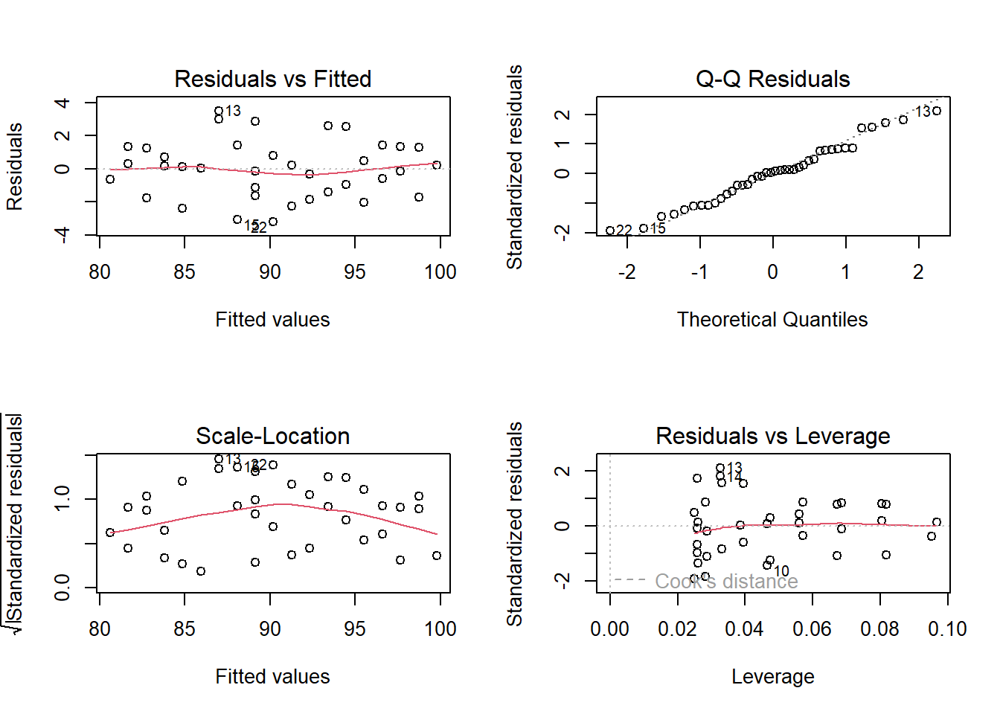
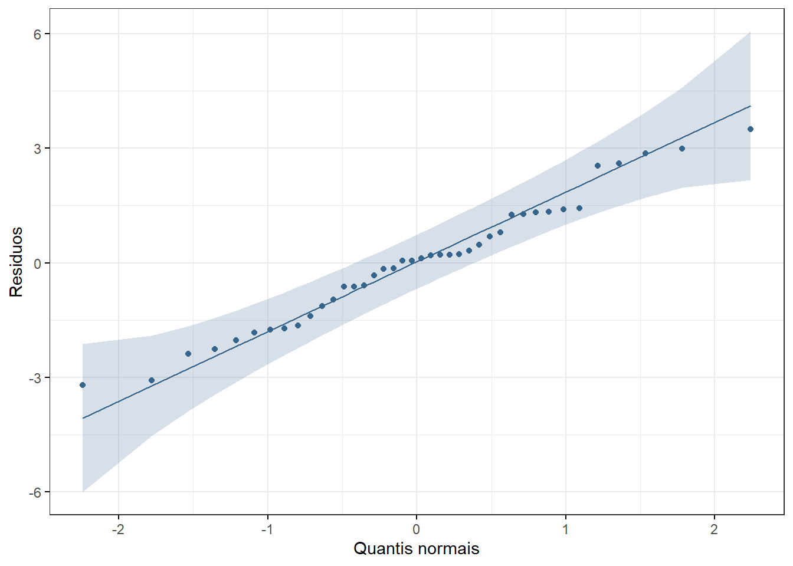
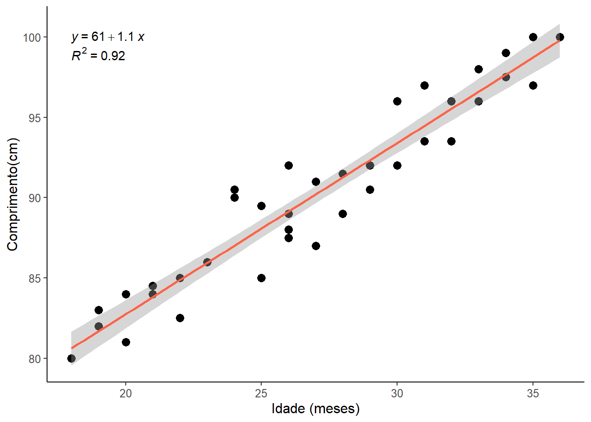

pacman::p_load(car,
dplyr,
ggplot2,
ggpubr,
ggsci,
kableExtra,
knitr,
lmtest,
readxl,
rstatix)15 Correlação e Regressão
15.1 Pacotes necessários
15.2 Correlação
A correlação é usada para avaliar a força e a direção da relação entre duas variáveis numéricas contínuas, normalmente distribuídas. A maneira mais comum de mostrar a relação entre duas variáveis quantitativas é através de um diagrama ou gráfico de dispersão (scatterplot). A Figura 15.1 exibe um exemplo de um gráfico de dispersão, onde se observa um padrão geral que sugere uma relação entre o estriol urinário (mg/24h) e o peso fetal em uma gravidez normal (1).

O gráfico de dispersão mostra que os valores de uma variável aparecem no eixo horizontal x e os valores da outra variável aparecem no eixo vertical y. Cada indivíduo nos dados aparece como o ponto no gráfico fixado pelos valores de ambas as variáveis para aquele indivíduo. Normalmente, eixo x é a variável explicativa (ou variável explanatória ou independente) e y a variável desfecho (variável resposta ou dependente).
Em um diagrama de dispersão deve-se procurar o padrão geral e desvios marcantes desse padrão. Verifica-se o padrão geral, observando a direção, a forma e força do relacionamento. Um tipo importante de desvio é um valor atípico, um valor individual que está fora do padrão geral do relacionamento.
A Figura 15.1 mostra uma clara direção do padrão geral que se move da esquerda inferior para a direita superior. Este comportamento é denominado de correlação positiva entre as variáveis. A forma do relacionamento é aproximadamente uma linha reta com uma ligeira curva para a direita à medida que se move para cima. A força de uma correlação em um gráfico de dispersão é determinada pela proximidade dos pontos em uma forma clara. No caso, quanto mais se aproxima de uma reta, mais forte é a associação, no caso de uma correlação linear. Duas variáveis estão negativamente associadas quando se comportam de forma oposta ao da Figura 15.1.
Obviamente, nem todos os diagramas de dispersão mostram uma direção clara que permita descrever como correlação positiva ou negativa e não tem uma forma linear, sugerindo que não há correlação, como a Figura 15.2.

15.2.1 Coeficiente de correlação de Pearson
A correlação é quantificada pelo Coeficiente de Correlação Linear de Pearson. Este coeficiente paramétrico, denotado por r, é um número adimensional, independente das unidades usadas para medir as variáveis x e y.
Suponha que se tenha dados sobre as variáveis x e y para n indivíduos. Os valores para o primeiro indivíduo são \({x}_{1}\) e \({y}_{1}\), os valores para o segundo indivíduo são \({x}_{2}\) e \({y}_{2}\) e assim por diante. As médias e desvios padrão das duas variáveis são \(\bar{x}\) e \({s}_{x}\) para os valores de x e \(\bar{y}\) e \({s}_{y}\) para os valores de y. A correlação r entre x e y é dada pela equação:
\[ r = \frac{\sum{(x_{1} - \bar{x})(y_{1} - \bar{y})}}{{\sqrt{\sum (x_{1} - \bar{x})^2\times\sum (y_{1} - \bar{y})^2}}} \]
O Coeficiente de Correlação, r, apresenta as seguintes características:
É um valor numérico que varia de -1 a +1 (Figura 15.3):
- Quando r = -1, há uma correlação linear negativa ou inversa perfeita;
- Quando r = +1, há uma correlação linear positiva ou direta perfeita;
- Quando r = 0, não há correlação entre as variáveis.

- Quanto mais os pontos se aproximam de uma linha reta, maior a magnitude de r.
- O coeficiente de correlação r é calculado para uma amostra e é uma estimativa do coeficiente de correlação da população \(\rho\) (leia-se rô).
- A correlação não faz distinção entre variáveis explicativas e variáveis resposta. Apesar de haver uma recomendação para que x seja a variável explanatória e y a variável desfecho. Não faz diferença qual variável será chamada chama de x e qual de y no cálculo da correlação.
- Como r usa os valores padronizados das observações, r não muda se as unidades de medida de x, y ou ambos são modificados. A correlação r em si não tem unidade de medida; é apenas um número.
15.2.2 Dados usados nesta seção
Está claro que existe uma relação entre a idade de crianças e a sua altura (comprimento). Vamos usar os dados coletados em um ambulatório pediátrico de 40 crianças entre 18 e 36 meses (20 meninos e 20 meninas).
Os dados estão no banco de dadosdadosReg.xlsx. Para baixar o banco de dados, clique aqui. Salve o arquivo no seu diretório de trabalho.
15.2.2.1 Leitura e exploração dos dados
Usar a função read_excel do pacote readxl para carregar o arquivo. Observar os dados com a função str().
dados <- read_excel("dados/dadosReg.xlsx")
str(dados)tibble [40 × 5] (S3: tbl_df/tbl/data.frame)
$ id : num [1:40] 1 2 3 4 5 6 7 8 9 10 ...
$ idade : num [1:40] 18 18 19 19 20 20 21 21 22 22 ...
$ comp : num [1:40] 80 80 83 82 84 81 84.5 84 85 82.5 ...
$ irmaos: num [1:40] 0 0 2 0 0 1 1 1 0 1 ...
$ sexo : chr [1:40] "masc" "fem" "masc" "fem" ...De acordo com uma das exigências da correlação, as variáveis idade e comp pertencem a classe das variáveis numéricas. A variável sexo foi lida como um variável numérica e será transformada em fator:
dados$sexo <- as.factor(dados$sexo)15.2.2.2 Medidas resumidoras
As medidas resumidoras serão calculadas, usando a função get_summary_stats () do pacote rstatix que necessita dos seguintes argumentos:
dados %>%
rstatix::get_summary_stats(idade,
comp,
type = "mean_sd")# A tibble: 2 × 4
variable n mean sd
<fct> <dbl> <dbl> <dbl>
1 idade 40 27.0 5.41
2 comp 40 90.2 6.0015.2.2.3 Visualização dos dados
Aqui, será usado o gráfico de dispersão (Figura 15.4), usando a função geom_point() do pacote ggplot2:
ggplot2::ggplot(dados,
aes(x=idade,
y=comp,
color = sexo)) +
geom_point(size = 3,
shape = 19) +
xlab("Idade (meses)") +
ylab ("Comprimento(cm)") +
theme_bw() +
theme(text = element_text(size = 12,
color = NULL,
face = "bold"))

A separação dos pontos por sexo, usando cores diferentes, não muda a análise e foi realizada apenas para treinamento (e curiosidade!), pois não há motivo para diferença da correlação entre os sexos.
15.2.3 Pressupostos da Correlação
A primeira e mais importante etapa antes de analisar os dados, usando a correlação de Pearson é verificar se é apropriado usar este teste estatístico.
Serão discutidos sete pressupostos, três estão relacionados com o projeto do estudo e como as variáveis foram medidas (pressupostos 1, 2 e 3) e quatro que se relacionam com as características dos dados (pressupostos 4, 5, 6 e 7) (2).
- Variáveis numéricas contínuas
As duas variáveis devem ser medidas em uma escala contínua (são medidas no nível intervalar ou de razão). No exemplo, tanto a variável idade como o comprimento (comp) são variáveis contínuas, como verificado acima.
- Variáveis devem estar como pares
As duas variáveis contínuas devem ser emparelhadas, o que significa que cada caso (por exemplo, cada participante) tem dois valores: um para cada variável.
- Independência das observações
Deve haver independência de casos, o que significa que as duas observações para um caso (por exemplo, a idade e o comprimento) devem ser independentes das duas observações para qualquer outro caso.
Se estes pressupostos forem atendidos, avalia-se os outros pressupostos:
- Relação linear entre as variáveis
O coeficiente de correlação de Pearson é uma medida da força de uma associação linear entre duas variáveis. Dito de outra forma, ele determina se há um componente linear de associação entre duas variáveis contínuas. Por esse motivo, verifica-se a relação entre duas variáveis, em um gráfico de dispersão, para ver se a execução de uma correlação de Pearson é a melhor escolha como medida de associação.
A variável idade é colocada como variável preditora (eixo x) e comp como desfecho (eixo y). O gráfico de dispersão anterior, mostra uma nítida correlação linear.
- Normalidade das variáveis
Para verificar se as variáveis têm distribuição normal, é possível usar o teste de Shapiro-Wilk, usando a função shapiro_test(), incluída no pacote rstatix:
dados %>% shapiro_test(idade, comp)# A tibble: 2 × 3
variable statistic p
<chr> <dbl> <dbl>
1 comp 0.958 0.141
2 idade 0.958 0.145O teste de Shapiro-Wilk de ambas as variáveis retorna um valor P > 0,05, indicando que não é possível rejeitar a \(H_{0}\); os dados seguem a distribuição normal, portanto o pressuposto foi atendido.
- Pesquisa de valores atípicos
A identificação dos valores atípicos pode ser feita usando a função identify_outliers() do pacote rstatix.
dados %>% identify_outliers(idade)[1] id idade comp irmaos sexo is.outlier is.extreme
<0 linhas> (ou row.names de comprimento 0) dados %>% identify_outliers(comp)[1] id idade comp irmaos sexo is.outlier is.extreme
<0 linhas> (ou row.names de comprimento 0)- Homoscedasticidade
A homocedasticidade assume que os dados são igualmente distribuídos sobre a linha de regressão. Descreve uma situação na qual o resíduo é o mesmo em todos os valores das variáveis independentes. A heterocedasticidade (a violação da homocedasticidade) está presente quando o tamanho dos resíduos difere entre os valores de uma variável independente.
O impacto de violar o pressuposto da homocedasticidade é uma questão de grau, aumentando à medida que a heterocedasticidade aumenta. Dessa forma, avalia-se a homocedasticidade, observando os resíduos.
Uma correlação linear pode ser descrita por uma reta. Em uma correlação linear perfeita, a reta passa por todos os pontos. Normalmente, não é possível traçar uma reta que passe por todos os pontos. A melhor reta é aquela que promove o melhor ajuste,ou seja, é aquela cuja distância dos pontos até a reta é a menor possível. Os resíduos são a diferença entre o valor observado e o valor previsto pelo melhor ajuste, estabelecido pelo modelo de regressao linear.
- Construção do modelo: Para ajustar a um modelo linear, usa-se a função
lmque deve conter um objeto da classeformulatipo (x ~ y) como argumento. Demais características da função podem ser obtidas com?lmou direto na ajuda doRStudio. O modelo será atribuído a um objeto denominadomod_reg.
mod_reg <- lm(comp ~ idade, dados)- Análise gráfica da homoscedasticidade: Pode ser feita através dos gráficos diagnósticos para a regressão linear, utilizados para verificar se o modelo funciona bem para representar os dados. Uma forma de avaliar é verificar como as variâncias se comportam. Os gráficos diagnósticos são apresentados de quatro maneiras diferentes.1 Neste estágio, serão avaliados o primeiro e o terceiro tipo (Figura 15.5).
par(mfrow=c(1,2)) # muda o layout do painel para 1 linha e 2 colunas
plot(mod_reg, which=c(1,3))
par(mfrow=c(1,1)) # retorna o layaout do painel para o padrão de 1 linha e 1 coluna

No gráfico 1, tem-se os resíduos em função dos valores estimados. Pode-se utilizar este gráfico para observar a independência e a homocedasticidade, se os resíduos se distribuem de maneira razoavelmente aleatória e com mesma amplitude em torno do zero.
No gráfico 3 (valores ajustados x resíduos), tem-se os resíduos em função dos valores estimados. Pode-se utilizar este gráfico para observar a independência e a homocedasticidade, se os resíduos se distribuem de maneira razoavelmente aleatória e com mesma amplitude em torno do zero. Permite verificar se há outliers - valores de resíduos padronizados acima de 3 ou abaixo de -3. Embora o gráfico possa dar uma ideia sobre homocedasticidade, às vezes, um teste mais formal é preferido. Existem vários testes para isso, mas aqui será utilizado o Teste de Breusch-Pagan. A \(H_{0}\) e a \(H_{1}\) podem ser consideradas como:
\(H_{0}\): Homocedasticidade. Os resíduos têm variância constante sobre o modelo verdadeiro.
\(H_{1}\): Heterocedasticidade. Os resíduos não têm variância constante sobre o modelo verdadeiro.
Se o valor P > 0,05 não se rejeita a \(H_{0}\) de homocedasticidade. O teste de Breusch-Pagan é encontrado na função bptest(), incluída no pacote lmtest:
lmtest::bptest(mod_reg)
studentized Breusch-Pagan test
data: mod_reg
BP = 0.049988, df = 1, p-value = 0.8231Os resultados não indicam heteroscedasticidade e isso é bom. Desta forma, pode-se aplicar a equação final de predição.
15.2.4 Execução do teste de correlação
15.2.4.1 Coeficiente de correlação de Pearson (r)
O coeficiente de correlação, r, é calculado para uma amostra e é uma estimativa do coeficiente de correlação da população \(\rho\) (rô).
Como visto, no início deste capítulo, a correlação não faz distinção entre variáveis explicativas e variáveis resposta. Apesar de haver uma recomendação para que x seja a variável explanatória e y a variável desfecho. Não faz diferença qual variável será chamada chama de x e qual de y no cálculo da correlação.
Como o r usa os valores padronizados das observações, não muda nada se as unidades de medida de x, y ou ambas são modificadas. A correlação r em si não tem unidade de medida; é apenas um número.
O cálculo pode ser realizado com a função cor_test() do pacote rstatix que usa os seguintes argumentos:
- data \(\to\) dataframe contendo as variáveis;
- … \(\to\) Uma ou mais expressões (ou nomes de variáveis) sem aspas separadas por vírgulas. Usado para selecionar uma variável de interesse. Alternativa ao argumento
vars. Ignorado quandovarsé especificado; - vars2 \(\to\) • vetor de caracteres opcional. Se especificado, cada elemento em vars será testado em relação a todos os elementos em vars2. Aceita nomes de variáveis sem aspas: c(var1, var2);
- alternative \(\to\) hipótese alternativa “two.sided” (bilateral) ou “greater” ou “less” (unilateral a direita ou a esquerda, respectivamente);
- method \(\to\) ⟶ qual coeficiente de correlação deve ser usado para o teste. Um dos termos “pearson”, “kendall” ou “spearman” pode ser abreviado;
- conf.level \(\to\) nivel de confiança. Padrão 0.95.
r <- dados %>% cor_test(idade,
comp,
method = "pearson")
r# A tibble: 1 × 8
var1 var2 cor statistic p conf.low conf.high method
<chr> <chr> <dbl> <dbl> <dbl> <dbl> <dbl> <chr>
1 idade comp 0.96 21.4 7.87e-23 0.927 0.979 PearsonA saída do Coeficiente de Correlação de Pearson (r) é igual 0.96 (IC95%: 0.93, 0.98) o que corresponde a uma correlação linear muito forte (Tabela 15.1)) entre a idade e o comprimento de crianças (3).
O coeficiente refere a existência de correlação linear, mas não especifica se a relação é de causa e efeito. O valor P especifica se a correlação é igual a zero (\(H_{0}\)) ou diferente de zero (\(H_{1}\)). No caso, ela é diferente de zero.
O importante é a magnitude do r, entretanto, o coeficiente r e o valor P devem ser interpretados em conjunto. Se o valor P > 0,05, mesmo que r seja diferente de zero, a correlação não deveria ser interpretada.
| Coeficiente de Correlação | Interpretação |
|---|---|
| 0,0 < 0,3 | desprezável |
| 0,3 < 0,5 | fraca |
| 0,5 < 0,7 | moderada |
| 0,7 < 0,9 | forte |
| 0,9 < 1,0 | muito forte |
| 1,0 | perfeita |
Talvez a melhor maneira de interpretar a correlação linear é elevar o valor do r ao quadrado para obter o Coeficiente de Determinação (\(R^{2}\)). No exemplo usado, tem-se que o \(R^{2}\) é igual a \(0,96^{2} = 0,922\), então, 92,2% da variação do comprimento da criança (y) podem ser explicados, nesses dados, pela variação da sua idade (x), fato mais ou menos óbvio!.
15.2.4.2 Coeficiente de correlação de Spearman (\(\rho\))
Se os pressupostos são violados é recomendado o uso de correlação não paramétrica (veja a Seção 17.2), incluindo testes de correlação baseados em postos (veja a Seção 17.3) de Spearman e Kendall (4).
Para calcular o coeficente, Usar a mesma função da correlação de Pearson, mudando o argumento method:
rho <- dados %>% cor_test(idade,
comp,
method = "spearman")
rho# A tibble: 1 × 6
var1 var2 cor statistic p method
<chr> <chr> <dbl> <dbl> <dbl> <chr>
1 idade comp 0.96 448. 3.30e-22 Spearman15.2.4.3 Coeficiente de correlação de Kendall (\(\tau\))
O coeficiente de correlação de postos de Kendall ou estatística tau de Kendall é usado para estimar uma medida de associação baseada em postos. Pode ser usado com variáveis ordinais ou quando não existe relação linear entre as variáveis. Uma vantagem sobre o coeficiente de Spearman é a possibilidade de ser generalizado para um coeficiente de correlação parcial. Deve ser usada ao invés do coeficiente de Spearman quando se tem um conjunto pequeno de dados com um grande número de postos empatados (veja a Seção 17.3). Para o cálculo desse coeficiente, continua-se com a mesma função anterior, mudando o method = “kendall”.
tau <- dados %>% cor_test(idade,
comp,
method = "kendall")
tau# A tibble: 1 × 6
var1 var2 cor statistic p method
<chr> <chr> <dbl> <dbl> <dbl> <chr>
1 idade comp 0.85 7.57 3.64e-14 KendallNo caso normal, a correlação de Kendall é mais robusta e eficiente que a correlação de Spearman. Isso significa que a correlação de Kendall é preferida quando há amostras pequenas ou alguns valores atípicos. O rho de Spearman geralmente é maior que o tau de Kendall.
15.3 Regressão Linear Simples
A regressão linear simples, assim como a correlação, é uma técnica usada para explorar a natureza da relação entre duas variáveis aleatórias contínuas. A principal diferença entre esses dois métodos analíticos é que a regressão permite investigar a alteração em uma variável, chamada resposta, correspondente a uma determinada alteração em outra, conhecida como variável explicativa. A regressão é um modelo matemático que permite a predição de uma variável resposta a partir de uma outra variável explicativa. A análise de correlação quantifica a força da relação entre as variáveis, tratando-as simetricamente (5).
A regressão linear simples é chamada assim, porque se tem apenas uma variável independente. Se houver mais de uma variável independente, é chamada de regressão múltipla.
A representação matemática do modelo de regressão linear populacional é descrita pela equação da reta de melhor ajuste em um conjunto de pares de dados (x, y) em um gráfico de dispersão de pontos.
\[ y = \beta_{0} + \beta_{1}x \]

A inclinação da reta de regressão (\(\beta_{1}\)) determina a variação de y para cada unidade de variação de x e recebe o nome de coeficiente angular ou de regressão. O ponto de interceptação da reta com y quando x é igual a zero é \(\beta_{0}\) e é denominado de coeficiente linear (Figura 15.6). A equação da reta de regressão amostral que estima a reta de regressão populacional é igual a:
\[ \hat {y} = b_{0} + b_{1}x \]
A reta do diagrama de dispersão da Figura 15.6 é a melhor reta de ajuste aos dados.
15.3.1 Resíduos
No exemplo usado no início (Seção 15.2.2) , verificou-se que existe uma correlação linear entre o a idade e o comprimento de crianças, usando uma amostra de 40 crianças entre 18 e 36 meses. A correlação de Pearson foi muito forte (r = 0,96, P < 0,00001). Esta relação linear pode ser descrita pela reta, mostrada na Figura 15.7.
ggplot2::ggplot(dados,
aes(x = idade,
y = comp,
color = "tomato")) +
geom_smooth(method = "lm",
se = FALSE,
color = "steelblue") +
geom_point(size = 3.5) +
theme_classic() +
xlab("Idade (meses") +
ylab("Comprimento (cm)") +
theme(text = element_text(size = 12)) +
theme(legend.position = "none")

Não é possível traçar uma reta que passe por todos os pontos. Esta reta ideal descreveria uma correlação perfeita, que não é o caso. Pode haver várias retas, a reta calculada pela regressão linear é aquela que promove o melhor ajuste, ou seja, é aquela cuja distância dos pontos até a reta é a menor possível.
Os resíduos são a diferença entre o valor observado e o valor previsto pelo modelo de regressão linear, construído anteriormente (mod_reg). A técnica estatística para achar a melhor reta que ajusta um conjunto de dados é denominada de método dos mínimos quadrados (Ordinary Least Square). A melhor reta ajustada é aquela em que a soma dos quadrados da distância de cada ponto (soma dos quadrados residual) em relação à reta é minimizada.
Para se obter os resíduos, graficamente, pode ser usar os seguintes comandos que resultam na Figura 15.8.
# Obter e salvar os valores preditos e residuais
dados$previsto <- predict(mod_reg)
dados$residuos <- residuals(mod_reg)# Construção do gráfico com os resíduos
ggplot2::ggplot(dados,
aes(x = idade,
y = comp)) +
geom_smooth(method = "lm",
se = FALSE,
color = "steelblue") +
geom_segment(aes(xend = idade,
yend = previsto),
linewidth = 0.8,
linetype = "dotted") +
geom_point(aes(y = previsto),
shape = 19,
size = 3,
colour = "red") +
geom_point(size = 3) +
theme_classic() +
xlab("Idade (meses") +
ylab("Comprimento (cm)") +
theme(text = element_text(size = 12))

Uma boa maneira de testar a qualidade do ajuste do modelo é observar os resíduos (6) ou as diferenças entre os valores reais (pontos pretos) e os valores previstos (pontos vermelhos). A reta de regressão, em azul no gráfico, representa os valores previstos. A linha vertical pontilhada da linha reta até o valor dos dados observados é o resíduo.
A ideia aqui é que a soma dos resíduos seja aproximadamente zero ou o mais baixo possível. Na vida real, a maioria dos casos não seguirá uma linha perfeitamente reta, portanto, resíduos são esperados. Na saída do resumo da função lm() em (mod_reg$residuals), você pode ver estatísticas descritivas sobre os resíduos do modelo (residuals), elas mostram como os resíduos são aproximadamente zero. Pode-se observar isso, usando a função summary () e sum():
summary(mod_reg$residuals) Min. 1st Qu. Median Mean 3rd Qu. Max.
-3.20326 -1.20326 0.08994 0.00000 1.25849 3.49221 sum(mod_reg$residuals)[1] -3.538836e-15Como se observa, a soma dos residuos é praticamente iguais a zero (\(-3,54 \times 10^-15\)).
15.3.2 Análise dos pressupostos do modelo de regressão
A análise exploratória do conjunto de dados foi feita quando do estudo da Correlação. Assim como a correlação, a regressão linear faz várias suposições sobre os dados.
15.3.2.1 Gráficos diagnóstico
Os gráficos de diagnóstico da regressão (Figura 15.9) podem ser criados usando a função plot() do R base, como mostrado para a correlação. O modelo de regressão, anteriormente criado, mod_reg, entra como argumento da função. A função par(mfrow = 2, 2) foi utilizada, como de outras vezes, para colocar os gráficos em duas linhas e duas colunas:
O modelo de regressão, anteriormente criado, mod_reg, entra como argumento da função:
par(mfrow=c(2,2))
plot (mod_reg)
par(mfrow=c(1,1))

Os gráficos de diagnóstico mostram resíduos de quatro maneiras diferentes:
Resíduos vs. ajustados (Residuals vs Fitted). Usado para verificar os pressupostos de relação linear. Uma linha horizontal, sem padrões distintos é um indicativo de uma relação linear, o que é bom. Os dados do exemplo (linha azul) afastam-se muito pouco do zero, mas a acompanham e não se observa nenhum padrão distinto, como uma parábola por exemplo.
Q-Q plot. Usado para examinar se os resíduos são normalmente distribuídos. É bom se os pontos residuais seguirem a linha reta tracejada. É possível dizer que os resíduos seguem a linha diagonal, com pequenos desvios toleráveis.
Localização da dispersão (scale-location). Usado para verificar a homogeneidade de variância dos resíduos (homocedasticidade). Uma linha horizontal com pontos igualmente dispersos é uma boa indicação de homocedasticidade. No exemplo usado, os resíduos parecem estar dispersos e a linha azul não está próxima do zero, sugerindo um problema com a homocedasticidade, entretanto, não está acima de 3.
Resíduos vs. alavancagem (leverage). Usado para identificar casos influentes, ou seja, valores extremos que podem influenciar os resultados da regressão quando incluídos ou excluídos da análise. Nem todos os outliers são influentes na análise de regressão linear. Mesmo que os dados tenham valores extremos, eles podem não ser influentes para determinar uma linha de regressão. Isso significa que os resultados não seriam muito diferentes, incluindo ou não esses valores. Por outro lado, alguns casos podem ser muito influentes, mesmo que pareçam estar dentro de uma faixa razoável de valores. Outra forma de colocar, é que eles não se entendem com a tendência na maioria dos casos. Ao contrário dos outros gráficos, desta vez os padrões não são relevantes. Deve-se estar atento aos valores distantes no canto superior direito ou no canto inferior direito. Esses pontos são os lugares onde os casos podem ter influência contra uma linha de regressão. Procurar casos fora de uma linha tracejada, distância de Cook. Quando os casos estão fora da distância de Cook (o que significa que têm pontuações altas de distância de Cook), os casos são influentes para os resultados da regressão. Os resultados da regressão serão alterados se excluirmos esses casos.
A aparência dos gráficos do exemplo mostra que não há nenhum caso influente. Pouco se observa as linhas de distância de Cook (uma linha tracejada) porque todos os casos estão bem dentro das linhas de distância de Cook.
15.3.2.2 Avaliação da normalidade dos resíduos
Ao analisar os pressupostos da correlação, foi realizado a avaliação da normalidade nos dados brutos que indicaram não ser possível rejeitar a hipótese nula de que os dados têm distribuição normal. Agora, isto será repetido para avaliar a normalidade dos resíduos, usando o mesmo teste, teste de Shapiro-Wilk.
Ao ser criado o modelo de regressão (mod_reg), ele fornece uma série de variáveis que pode ser listada da seguinte maneira:
ls(mod_reg) [1] "assign" "call" "coefficients" "df.residual"
[5] "effects" "fitted.values" "model" "qr"
[9] "rank" "residuals" "terms" "xlevels" Usando a variável residuals, confirma-se o observado no QQPlot de que os resíduos apresentam distribuição normal, pois o valor de P > 0,05.
shapiro_test(mod_reg$residuals)# A tibble: 1 × 3
variable statistic p.value
<chr> <dbl> <dbl>
1 mod_reg$residuals 0.979 0.655A saída retorna a estatística do teste de Shapiro-Wilk com um valor P = 0,655, mostrando que os dados se ajustam à distribuição normal. Pode-se também construir um gráfico QQ (Figura 15.10), usando a função ggqqplot() do pacote ggpubr que exibe o mesmo resultado.
ggpubr::ggqqplot(mod_reg$residuals,
color = "steelblue4",
xlab = "Quantis normais",
ylab = "Residuos",
ggtheme = theme_bw())

15.3.2.3 Pesquisa de valores atípicos nos resíduos
Existe uma função pode ser usada para verificar valores atípicos nos resíduos da regressão para modelos lineares como rstandard() do pacote stats, que analisa os resíduos padronizados.
A função padroniza todos os resíduos e inclui no objeto residuos_p. Para analisá-los, faz-se um sumário, usando a função summary(). Esta função exibirá os a estatística dos 5 números mais a média para os resíduos padronizados:
residuos_p <- rstandard(mod_reg)
summary(residuos_p) Min. 1st Qu. Median Mean 3rd Qu. Max.
-1.9327846 -0.7271178 0.0548028 0.0006059 0.7779208 2.1154118 Em uma amostra normalmente distribuída, ao redor de 95% dos valores estão entre –1,96 e +1,96, 99% deve estar entre –2,58 e +2,58 e quase todos (99,9%) deve se situar entre –3,09 e +3,09.
Portanto, resíduos padronizados com um valor absoluto maior que 3 são motivo de preocupação porque em uma amostra média é improvável que aconteça um valor tão alto por acaso (7).
Se a saída da função rstandard() for comparada com o eixo y do gráfico Residuals vs Leverage, dos gráficos diagnósticos, verifica-se valores semelhantes que variam abaixo de 3 e acima de -3, indicando que não há outliers influenciando e a mediana está próxima de zero.
15.3.2.4 Homocedasticidade dos resíduos
Na Seção 15.2.3, foi analisada a homocedasticidade , onde se viu que o teste de Breusch-Pagan, retornou um resultado de P = 0,8231, indicando que a variância permanece praticamente constante, havendo homocedasticidade nos resíduos.
O problema mais sério associado à heterocedasticidade é o fato de que os erros padrão são tendenciosos. Como o erro padrão é fundamental para a realização de testes de significância e cálculo de intervalos de confiança, os erros padrão tendenciosos levam a conclusões incorretas sobre a significância dos coeficientes de regressão. No geral, no entanto, a violação da suposição de homocedasticidade deve ser bastante grave para apresentar um grande problema, dada a natureza robusta da regressão pelo método ordinary least-squares. No entanto, é importante que a equação final de predição seja aplicada apenas a populações com as mesmas características da amostra do estudo.
15.3.2.5 Independência dos resíduos
Os resíduos no modelo devem ser independentes, ou seja, não devem ser correlacionados entre si. Para verificar isso, pode-se executar o teste Durbin-Watson (teste dw), utilizando a função durbinWatsonTest() do pacote ´car`. O teste retorna um valor entre 0 e 4. Um valor maior que 2 indica uma correlação negativa entre resíduos adjacentes, enquanto um valor menor que 2 indica uma correlação positiva. Se o valor for dois, é provável que exista independência. Existe uma sugestão de que valores abaixo de 1 ou mais de 3 são um motivo definitivo de preocupação (7). É importante mencionar que o teste tem como pressuposto a normalidade dos dados.
durbinWatsonTest(mod_reg) lag Autocorrelation D-W Statistic p-value
1 -0.1044054 2.204843 0.63
Alternative hypothesis: rho != 0Como na saída do teste o valor P > 0,05 e a estatística DW é igual a 2,2, não se rejeita a hipótese nula de independência (rho = 0).
15.3.3 Tamanho amostral na regressão
O tamanho da amostra deve ser suficiente para suportar o modelo de regressão. É importante coletar dados suficientes para obter um modelo de regressão confiável. O tamanho da amostra necessário para suportar um modelo depende do valor do coeficiente de correlação do modelo (no caso da correlação linear simples é o r de Pearson) e do número de variáveis incluídas.
A Tabela 15.2 (8) mostra o número de participantes necessários em modelos com 1 a 4 preditores independentes. Como se observa, o requisito de tamanho da amostra aumenta com o número de variáveis preditoras.
| Valor r | 1 variável preditora | 2 variáveis preditoras | 3 variáveis preditoras | 4 variáveis preditoras |
|---|---|---|---|---|
| 0.2 | 190 | 230 | 265 | 290 |
| 0.3 | 80 | 100 | 115 | 125 |
| 0.4 | 45 | 55 | 65 | 70 |
Existem muitas regras práticas, sugerindo o tamanho da amostra. Uma delas, diz que se deve ter 10 a 15 casos por variável preditora no modelo. Entretanto, essas regras podem ser duvidosas e o melhor é calcular o tamanho amostral baseado no tamanho do efeito, usando, por exemplo o site StatToDo
15.3.4 Realização da regressão linear
Após analisar os pressupostos do modelo de regressão do exemplo, verificou-se que as variáveis idade e comprimento da criança têm relação linear, que os resíduos do modelo têm distribuição normal, que existe homoscedasticidade e que não há pontos influentes. E, portanto, o modelo permite que se realize uma análise de regressão linear para avaliar a relação entre as variáveis independentes e dependentes.
Para realizar uma análise de regressão linear simples e verificar os resultados, há necessidade de executar dois comandos. O primeiro, que cria o modelo linear já foi realizado na análise dos gráficos e será repetido aqui. O segundo, imprime o resumo do modelo com a função summary():
mod_reg <- lm (comp ~ idade, dados)
summary (mod_reg)
Call:
lm(formula = comp ~ idade, data = dados)
Residuals:
Min 1Q Median 3Q Max
-3.2033 -1.2033 0.0899 1.2585 3.4922
Coefficients:
Estimate Std. Error t value Pr(>|t|)
(Intercept) 61.44408 1.36466 45.02 <2e-16 ***
idade 1.06515 0.04967 21.45 <2e-16 ***
---
Signif. codes: 0 '***' 0.001 '**' 0.01 '*' 0.05 '.' 0.1 ' ' 1
Residual standard error: 1.678 on 38 degrees of freedom
Multiple R-squared: 0.9237, Adjusted R-squared: 0.9217
F-statistic: 459.9 on 1 and 38 DF, p-value: < 2.2e-16A saída da função summary() primeiro apresenta como o modelo foi obtido e, em seguida, resume os resíduos do modelo. Por último, tem-se os Coeficientes:
- As estimativas (Estimate) para os parâmetros do modelo - o valor do intercepto y (neste caso, 61,44) e o efeito estimado da idade sobre o comprimento (1,1)- significam que para cada unidade de aumento na idade se espera um aumento de 1,1 cm no comprimento.
- O erro padrão dos valores estimados (Std. Error).
- A estatística de teste (t value)
- O valor P (Pr (>| t |)), também conhecido como a probabilidade de encontrar a estatística t fornecida se a hipótese nula de nenhuma correlação for verdadeira.
- As três linhas finais são os diagnósticos do modelo - o mais importante a observar é o valor P (\(2,2\times 10^{-16}\)), que indica se o modelo se ajusta bem aos dados.
A partir desses resultados, pode-se dizer que existe uma correlação positiva significativa entre idade e comprimento (valor P < 0,001), com um aumento de 1,1 cm no comprimento para cada aumento de 1 mês no na idade , possibilitando a previsão comprimento da criança pela idade.
Estes dados são empregados para formular a equação do modelo de regressão da seguinte maneira:
\[ \hat {y} = 61,44 + 1,1 x \]
O erro padrão das estimativas são fornecidos. Esses dados permitem calcular o IC95%. Ou pode-se usar a função confint() do pacote stats, que será colocada dentro da função round() para arredondar os valores até um digito.
round (confint (mod_reg, level = 0.95), 1) 2.5 % 97.5 %
(Intercept) 58.7 64.2
idade 1.0 1.2Dessa forma, é possível prever que uma criança de 30 meses, de acordo com o modelo, terá o seguinte comprimento:
comp_30m <- 61.4 + 1.1 * 30
comp_30m[1] 94.4lim.sup <- 64.2 + 1.2*30
lim.inf <- 58.7 + 1.0*30
print (c(lim.inf, lim.sup))[1] 88.7 100.2Ou seja, espera-se que uma criança tenha, aos 30 meses de idade, um comprimento médio de 94,4 cm (IC95%: 88,7-100,2)
15.3.5 Visualização dos resultados
Será obtido um gráfico de dispersão com a reta de regressão e seu intervalo de confiança de 95% (Figura 15.11). Além disso, adicionou-se a equação do modelo de regressão (o R arredondou os valores), juntamente com o coeficiente de determinação \(R^{2}\).
ggplot2:: ggplot (dados, aes (x = idade, y = comp)) +
geom_point (size = 3) +
geom_smooth (method = "lm", se = TRUE, color = "tomato") +
stat_regline_equation (label.y = 100, aes (label = (..eq.label..))) +
stat_regline_equation (label.y = 99, aes (label = (..rr.label..))) +
theme_classic () +
xlab ("Idade (meses)") +
ylab ("Comprimento(cm)") +
theme (text = element_text (size = 12))

No gráfico, o intervalo de previsão médio de 95% em torno da reta de regressão é um intervalo de confiança de 95%, ou seja, a área na qual há 95% de certeza de que a reta de regressão verdadeira se encontra (9). Esta banda de intervalo é levemente curvada porque os erros na estimativa do intercepto e da inclinação são incluídos em adição ao erro na previsão da variável desfecho.
Se for observado, o IC95% da reta de regressão obbtida pelo ggplot2 difere um pouco do IC95% da função confint(). Isto ocorre porque:
- quando se usa
geom_smooth(method = "lm", se = TRUE), o intervalo de confiança gerado é baseado na incerteza da previsão média da regressão. Ou seja, ele mostra a faixa onde se espera que a média da variável dependente (comp) esteja para um determinado valor da variável independente (idade) e
- quando se usa a função
confint(), ela retorna o intervalo de confiança dos coeficientes do modelo de regressão. Ou seja, ela fornece a incerteza associada aos parâmetros estimados (incluindo o intercepto e os coeficientes das variáveis preditoras).
A principal diferença, portanto, é que o intervalo de confiança do ggplot2 reflete a incerteza da linha de regressão ajustada, enquanto confint() fornece a incerteza dos parâmetros do modelo.
Maiores detalhes sobre os testes diagnósticos podem ser encontrados em: https://data.library.virginia.edu/diagnostic-plots/↩︎